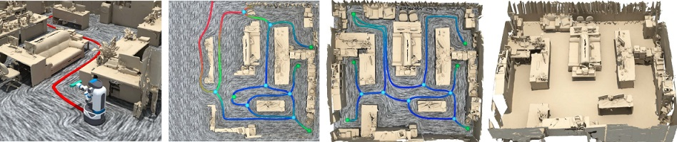
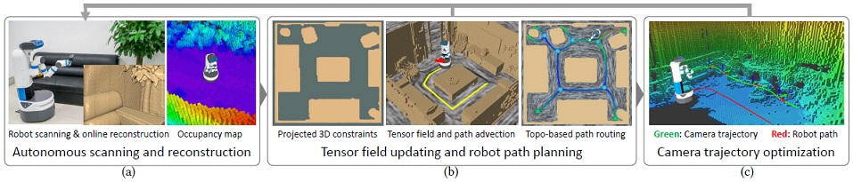
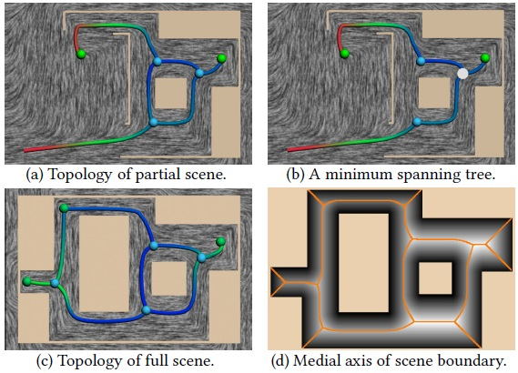
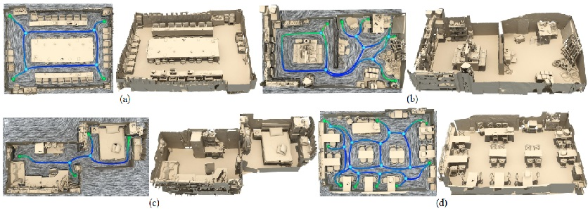

Autonomous Reconstruction of Unknown Indoor Scenes Guided by
Time-varying Tensor Fields
Kai Xu1,2,
Lintao Zheng2, Zihao Yan1, Guohang Yan1, Eugene Zhang3,
Matthias Niessner4, Oliver Deussen5, Daniel Cohen-Or1,6, Hui Huang1
1Shenzhen University, 2National University of Defense Technology,
3Oregon State University 4Stanford University 5University of Konstanz 6Tel-Aviv University
ACM Transactions
on Graphics (SIGGRAPH Asia 2017), 36(6)

Figure 1: We present an autonomous system for active object identification in an indoor scene (a), with consecutive depth acquisitions, for
online scene modeling. The scene is first roughly scanned, and segmented to generate 3D object proposals. Targeting an object proposal (b),
the robot performs multi-view object identification, based on a 3D shape database, driven by a 3D Attention Model. The retrieved 3D models
are inserted into the scanned scene (c), replacing the corresponding object scans, thus incrementally constructing a 3D scene model (d).
|
Abstract
|
Autonomous reconstruction of unknown scenes by a mobile robot inherently
poses the question of balancing between exploration efficacy and reconstruction
quality. We present a navigation-by-reconstruction approach to address
this question, where moving paths of the robot are planned to account for
both global efficiency for fast exploration and local smoothness to obtain
high-quality scans. An RGB-D camera, attached to the robot arm, is dictated
by the desired reconstruction quality as well as the movement of the robot
itself. Our key idea is to harness a time-varying tensor field to guide robot
movement, and then solve for 3D camera control under the constraint of the
2D robot moving path. The tensor field is updated in real time, conforming
to the progressively reconstructed scene. We show that tensor fields are
well suited for guiding autonomous scanning for two reasons: first, they
contain sparse and controllable singularities that allow generating a locally
smooth robot path, and second, their topological structure can be used for
globally efficient path routing within a partially reconstructed scene. We
have conducted numerous tests with a mobile robot, and demonstrate that
our method leads to a fluent exploration and high-quality reconstruction of
unknown indoor scenes.
|
|
|
Paper |
|
|
|
Slides |
|
|
|
Video |
|
|
|
| Images |

Figure
2: An overview of our method and system. Our system runs an online scene reconstruction and employs an occupancy map for storing spatial occupancy
information (a). The progressively reconstructed 3D scene geometry is projected onto the floor plane (b-left), to compute a geometry-aware time-varying
tensor fields. Robot movement is locally directed by path advection over the fields (b-middle), and globally guided with path finding, based on the field
topology (b-right). A smooth camera trajectory is computed along the path (c).

Figure
3: The topological skeleton of tensor field can be computed for a partially
scanned scene (a) and used for guiding the robot scanning. When the
robot (white dot) arrives at a trisector, a minimum cost spanning tree is generated
from the topological graph, to enable branch selection (b). When the
reconstruction is complete, the field topology (c) conforms approximately
to the medial axis of the full scene boundary (d).

Figure
4: Four real scenes scanned and reconstructed by our autonomous system. For each scene, we show the final field topology (left) and the reconstruction
result (right). The scene in (c) is not closed, due to inaccessible narrow doors; the scanning was terminated by human..
|
|
|
| Thanks |
We thank the anonymous reviewers for their valuable comments
and suggestions.
|
|
|
| Code |
|
|
|
| Bibtex |
@article
{xu_siga17,
title = {Autonomous Reconstruction of Unknown Indoor Scenes Guided by
Time-varying Tensor Fields},
author
= {Kai Xu and Lintao Zheng and Zihao Yan and Guohang Yan and Eugene Zhang and Matthias Niessner and Oliver Deussen and Daniel Cohen-Or and Hui Huang},
journal
= {ACM Transactions on Graphics (Proc. of SIGGRAPH Asia 2017)},
volume
= {36},
number
= {6},
pages
= {Article No. 202},
year
= {2017}
}
|
 
|